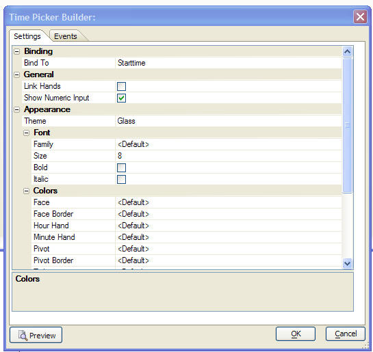

SuperControls
Overview of New Supercontrol Types
There are several new controls that can be placed on Forms, and (for some of the supercontrols), on other layout types. These new controls are called 'supercontrols' because they go far beyond the simple controls (like textboxes, labels, etc.) that you can currently place on Forms.
The following table summarizes the new controls that can be placed on Forms:
| Record Navigator Trackbar | Allows you to move through the records in a Form by dragging on a trackbar or scrollbar. When you drag on a trackbar, bubble help show you information from the record that you would be on if you were to stop dragging. |
| Embedded Xdialog | Allows you to embed an Xdialog in a Form. The Xdialog definition can either be stored in the Form definition itself, or it can be a Global Script. You can bind fields and variables in your Form to the variables shown in the Xdialog. For example, if the table on which the Form is based has a field called 'firstname' and the Xdialog displays an input control for a variable called 'fn', you can bind the 'firstname' field to the 'fn' variable. This means that as you navigate from one record to the next, the value shown in the Xdialog automatically changes to show the value for the current record. Similarly, if you edit the value in the field on the Xdialog, the bound field in the Form's table is automatically updated. |
| Hyperlink | The hyperlink super control is a very simple form of a button that looks like a hyperlink on an HTML page, rather than a standard button on a Form. When you click on the hyperlink any Xbasic code can be executed. |
| Report Preview | Allows you to embed a window in a Form that will show Reports, Labels or Letters. The Report can be automatically filtered based on data in the current record. When you navigate from record to record, the report preview window is automatically updated. |
| Clock | Allows you to embed a clock control on a Form. The clock can be bound to a time or shorttime field (or variable) in one of the tables that the Form is based on. When you navigate from record to record, the time displayed on the clock is automatically updated. If you change the time in the clock control, the field or variable to which the clock is bound is automatically changed. |
| Calendar | Allows you to embed a calendar control on a Form. The calendar can be bound to a date field (or variable) in one of the tables that the Form is based on. When you navigate from record to record, the date displayed on the calendar is automatically updated. If you change the date in the calendar control, the field or variable to which the calendar is bound is automatically changed. |
| HTML Forms |
HTML Forms are windows in your Form that contain HTML content.
The HTML content will typically contain HTML form elements, such
as input controls, text areas, buttons etc. You can bind fields
and variable in your Form to the HTML input controls in the HTML
form. As you navigate from record to record in the form, the
values shown in the HTML form controls will automatically be
updated. And similarly, if you edit the value in any of the
bound HTML form controls, the corresponding field in the Form's
table is automatically updated.
Note: The HTML Form supercontrol can also be used in the Xdialog Genie is Action Scripts. |
| PDF Viewer | The PDF Viewer control allows you to place a window on your Form that will display a PDF document. You must have Adobe Acrobat reader installed for this feature to work. |
| Web Content | Allows you to display a web page in a window on a Form. The URL for the web page can either be static, or dynamically computed from data in the current record. Pre-defined templates for Google Maps, Google Search, MSN Maps, and Yahoo Maps are provided. You can also create your own templates. |
| HTML Content | Puts static HTML content in a window on a Form. The static content is specified by an expression that evaluates to the HTML text that you want to display. |
Inserting a Supercontrol on a Form
To place an Supercontrol on a form, select the SuperControl tool on the toolbar, draw the control on the form. As soon as you release the mouse button, the pop-up 'Insert Supercontrol' dialog appears, as shown below.
Make your selection, and then press the Insert button.
Placing a Supercontrol on the Toolbox
If you expect to use any of the Supercontrols frequently, then you can put that control directly on the toolbox. This will give you single click access to the control in the future.
To place a Supercontrol on the toolbox, right click on any Icon on the toolbox and select 'Add Supercontrol to Toolbox...'.
Editing a Supercontrol
After you have placed a supercontrol on a Form layout you can edit its properties. To display the supercontrol's Properties Dialog, either right click on the supercontrol and select 'Supercontrol Designer...' from the right click menu, or click on the small button at the top right corner of the supercontrol.
|
To edit a supercontrol, click on the button in the top right corner. |
HTML Form Supercontrol
The HTML Form supercontrol allows you to place a window on your Form that contains an HTML form. The controls in the HTML form can be bound to the fields in the table that the Form is based on. The HTML Form supercontrol is aimed at users who have a good understanding of HTML and CSS and want to extend their forms using effects more easily accomplished in HTML than using standard Alpha Five form design features.
The screenshot below shows a Form with standard Alpha Five controls in the top section, and an HTML form showing the save fields in the bottom section:
|
Alpha Five Form showing an HTML Form supercontrol in the bottom section of the form. |
Watch a video demonstration of this feature.
When you place the HTML Form supercontrol on a Form, the following Designer screen is shown:
|
|
|
HTML Form supercontrol Designer. |

| Tab Name | Purpose |
| HTML Body | This page allows you to define the HTML layout of the HTML Form. |
| Bindings |
This page allows you to define bindings between the controls on
your HTML Form and the fields and variables in the underlying
table that the form is based on. For example, if the Form is
based on the 'Customer' table and you have an input control on
the HTML Form with an id of 'fn', you can bind to 'firstname'
field from the 'Customer' table to the 'fn' control on the HTML
Form.
You can also define 'Property Bindings' which allow you to define expressions that automatically control property values on the HTML Form. For example, you might want to automatically show the border around an input control in red if some field value is above a certain amount. |
| CSS | This page allows you to define any CSS used in your HTML Form. You have access to Alpha Five's full featured CSS editor from this tab pane. |
| Linked Files | If your HTML Form references any CSS or Javascript that is stored in separate files, you can defined the links to these files on this page. |
| Initial Code | This page allows you to specify any Xbasic code that you want to execute before the HTML Form is instantiated. |
| Events |
This page allows you to define Xbasic event handlers for any
event on the HTML Form that you want to handle using
Xbasic. For example, you might have defined a hyperlink control
on the HTML Form. If you want to respond to the on |
Field Bindings
The controls on the HTML Form supercontrol can be bound to fields and variables in the underlying table(s) that the container Form is based on. For example in the in the screenshot shown above, the HTML Supercontrol is placed on a Form that is based on the 'customer' table. The HTML form's controls are bound to the firstname, lastname, etc. fields in underlying table.
To define the field bindings, select the Bindings tab in the Designer.
|
Bindings tab allows you to define bindings between controls on the HTML form and the underlying table that the container form is based on. |
Property Bindings
Property Bindings are an extremely powerful feature of HTML Forms. Property Bindings allow you to bind a property value of an element on the HTML form to the result of an Xbasic expression. For example, you might want to put a red border around a field if a certain condition was met.
To define a Property Binding, select the Bindings tab in the Designer. In the example shown below, we set the 'style.borderColor' property of the 'billCountry' input control to 'red' if the Bill_country field is blank. If it is not blank we set it to a null value, which means that the default value for the property is used (as defined by the CSS that was defined for the HTML Form).
|
To edit a supercontrol, click on the button in the top right corner. |
In this next example, lets assume that we are displaying a built-in Alpha
Five icon in the HTML form which can be done by using the special 'a5:image'
attribute on an tag.
The following HTML shown an image called 'OverdueIcon'.
Note: Built-in Alpha Five icons also include any images that you add to the Code tab on the Control Panel.
Assume that we would like to display an image called 'currentIcon' if a customer's account was current, and the 'OverdueIcon' if the balance was overdue.
To do this we would define a property binding for the 'image1' element on the HTML Form, setting the 'a5:image' property to the result of this expression:
iif(date() > dueDate,"OverdueIcon","currentIcon")
Watch a video demonstration of property bindings.
Xbasic Event Handlers
The HTML form raises the standard HTML Form events. These are:
- on
click - on
mousedown - on
mouseup - on
mouseover - on
mouseout - on
change - on
blur - on
focus - on
keypress - on
keydown - on
keyup
You can write event handlers for these events using standard Xbasic scripts. If you prefer, you can also write event handlers for these events using Javascript. However, being able to write event handlers for HTML events using Xbasic provides a big benefit to users who already know Xbasic, but not Javascript.
To handle an event using Xbasic, the event is specified by prefixing the
event name with 'a5:'. For example, the following shows the HTML for the
'bill_address2' input control. Notice that the event handler is specified as
'a5:on
Note: The on
blur="address2_on
The Xbasic function address2_on
function address2_on
if word(self.Bill_address_2,1," ") = "Apt." then
self.Bill_address_2 =
stritran(self.Bill_address_2,"Apt.","Apartment")
end if
end function
Notice that in order to refer to any of the fields in the table (or tables) that the Form is based on you must use the 'self.' prefix. If you are referencing a field in a child table, or a form variable, you need to qualify the fieldname with its alias, but you must still use the self prefix. For example:
- self.customer->lastname
- self.var->formVar1
Accessing the DOM in Your Event Handler Scripts
Your Xbasic event handler scripts have full access to the HTML DOM (Document Object Model) and can manipulate any aspect of the DOM.
To get a pointer to the DOM, you would insert this code into your event handler function:
DIM DOM as p
DOM = self.htmlform.object.ax.document
For example, the following Xbasic code snippet gets a pointer to the DOM, then gets a pointer to the input control with the id of 'billAddress1' and then sets its border color to red. Note that when working with the DOM, object ids and property names are all case sensitive.
DIM DOM as p
DOM = self.htmlform.object.ax.document
id = DOM.getElementById("billAddress1")
id.style.borderColor = "red"
If we had wanted to handle the on
blur="address2_on
The address2_on
Alpha Five HTML Controls
When you define the HTML for your HTML Form, you can use the standard HTML tags. However, there are also a series of special tags that you can use to define the following controls in your HTML Form:
| Alpha Five HTML Control | Description |
| Accordion |
Allows you to create an accordion control with multiple panes.
You can place any HTML content in each accordion pane. You can
specify whether only one pane is open at a time, or whether
multiple panes can be visible simultaneously. The image below
shows an accordion with four panes, only one of which can be
visible at a time:
|
| Tab |
Allows you to create a tab control with multiple panes. The tab
buttons can be placed on top, bottom, left or right of the
client area. You can place any HTML content in each tab pane.
The image below shows a tab control:
|
| Conditional Block | Allows you to create a series of panes (just like a tab control). An Xbasic expression determines which pane is visible. This is similar to the 'Conditional Object' control that can be placed on all Layout objects (e.g. Forms, Reports, Labels, Letters). Any HTML content can be placed in each pane of the Conditional Block. |
| Condition | Defines some HTML content that is either displayed or not displayed depending on the result of an Xbasic expression. You can specify if the space taken by the control is preserved or not when the control's content is not displayed. For example, you might want to display some message on the form if the user enters an invalid value into a control. |
| Dynamic Content Region |
Creates a region in the HTML layout whose content is dynamically
updated by an XBasic expression. When the XBasic expression
changes the HTML content is automatically updated. For example,
you might have an Xbasic variable that contains a string of text
that is an HTML table. When you want to change the rows or
columns in the table, just set this variable to a new value that
contains the new table layout and the Dynamic Content Region on
the HTML Form will be updated. In the example below, the table
is in a Dynamic Content Region. The HTML for the table is in a
string variable. When this variable changes, the Dynamic Content
Region is automatically updated.
|
| Dynamic Select | Allows you to dynamically set and change the choices in a dropdownbox (i.e. both a listbox and a combobox) by setting an Xbasic variable to a comma-delimited list of choices. |
| Alpha Five Image |
Normally, the |

Note: Examples of all of these special Alpha Five HTML controls can be found in the sample 'Learning Xdialog' database that ships with Alpha Five. See the 'HTML Forms' section in the 'What's new in Version 9' category.
To place an Alpha Five HTML control in your HTML Form, click the 'A5 Controls' button on the toolbar when the 'HTML Body' tab is active.
|
Placing an Alpha Five HTML control in your HTML Form. |
The following dialog allows you to select the appropriate Alpha Five control:
|
Selecting an Alpha Five HTML Control |
The Accordion Control
When you place an Accordion control in your HTML form, a genie is displayed that allows you to set the properties of the accordion.
|
Accordion control Genie. |
In the top part of the Genie you can enter a list of pane titles to appear in the accordion. Enter a CR-LF delimited list.
Next, you can choose a style for the accordion from the list of available styles.
You can optionally specify the height and width of the accordion control. If you leave these prompts blank the accordion will automatically stretch to the size of its contents.
You can also specify if the currently open pane is closed when a new pane is opened.
When you click the OK button, the HTML for the control is inserted into the HTML Body of the HTML Form. For example:
Content for Pane 1 pane here...
Content for Pane 2 pane here...
Notice that the accordion uses special A5 HTML tags:
Editing an Accordion Control using the Genie
After the Accordion control has been placed in the HTML form, you can either edit the HTML directly, or you can display a genie.
To display the genie, click in the opening
|
The Accordion Control Editor. |
The Genie allows you to:
- Add and delete tab panes
- Reorder tab panes
- Change the style of the accordion
- Edit the CSS for the various classes that are used to define the appearance of the Accordion
- Specify the Accordion variable (see below for more on the Accordion variable).
The Accordion variable is a character variable that contains a CR-LF delimited string of numeric values showing the index values of the open tabs. For example, let's assume that you have defined an Accordion with four tabs. If you have set the 'Single Band' property to false (meaning that multiple tab bands can be open at the same time), and if you have opened tab pane 1 and 3 the Accordion variable will contain:
1
3
The value in the Accordion variable can be set. For example, if you set the Accordion variable to "4", pane number four will open, and all other panes will close.
Accordion Control Events
The Accordion control exposes two events:
| beforeChange | Fires when the user attempts to change the active tab, but before the change is actually made. If the event handler returns .f. then the tab is not changed. |
| afterChange | Fires after the user has changed the active tab. |
Note that because the accordion is an Alpha Five HTML control, not a native HTML control, the event handlers for the beforeChange and afterChange events can only be written in Xbasic.
In the following example, accordion control is placed on a form and an event handler is defined for the beforeChange event:
Content for Pane 1 pane here...
Content for Pane 2 pane here...
Here is the event handler function (defined on the Events tab of the HTML Form builder):
function canchangetab as l ()
q = ui_msg_box("Notice","Allow me to change the active tab?",UI_YES_NO)
if q = ui_yes_selected then
canchangetab = .t.
else
canchangetab = .f.
end if
end function
Setting and Getting Open Panes using Xbasic
It is often necessary to determine which panes are currently open and to set the open panes using Xbasic. It is also a requirement sometime to be able to set the initial open panes when the accordion is loaded.
The open panes are controlled by the variable that is set in the
'Accordion_var' is a character variable that has a CRLF delimited list of
open panes (in the case where the accordion is configured to allow multiple open
panes). For example if pane 1 and 3 were open, this variable would contain: 1 3 If the accordion is configured to only allow a single open pane, then of
course, the accordion variable will not be a CRLF delimited list, but will be a
single value. To set the initially open panes, in the 'Initial Code' tab, simply dim and
set the value of the accordion variable ('accordion_var' in this example). In the context of an Xdialog, the value of the accordion variable ('accordion_var'
in this example) can be read and set directly. So, if you place an HTML Form
that contains an accordion on an Xdialog, you can simply put code like this in
the Xdialog event handler: if a_dlg_button = "closeAllPanes" then a_dlg_button = "" accordion_var = "" end if if a_dlg_button = "openFirstPane" then a_dlg_button = "" accordion_var = "1" end if However, in the case of an accordion control embedded in an HTML Form
Supercontrol on a Form layout, you cannot directly get at the accordion variable
('accordion_var' in this example). Instead you must use the .SetVariable() and .GetVariable()
methods to set and get 'accordion_var'. For exmaple (assume that when you placed the HTML Form Supercontrol on the
Form layout, the object name you assigned to the control was 'htmlform1'): 'set the accordion to open panes 1, 2 and 3 htmlform1.SetVariable("accordion_var",comma_to_crlf("1,2,3")) 'show which panes are currently open dim openpanes as c openpanes = htmlform1.GetVariable("accordion_var") ui_msg_box("Open Panes",openpanes) Watch a video demonstration of
the Accordion control in an HTML Form supercontrol (part 1) Watch a video demonstration of the
Accordion control in an HTML Form supercontrol (part 2) When you place a Tab control in your HTML form, a genie is displayed
that allows you to set the properties of the tab control. The HTML Form Tab Control Genie. The top part of the window shows a CRLF delimited list of tab pane titles.
The middle part of the windows shows a list of style templates that you can
choose from to control the look of the tab object. Pane width and pane height can be left blank, in which case the tab object
will be sized automatically based on the size of the content in the tab panes. The location of the tab buttons can be set in the Tab Location dropdown box.
The tab location can be top, left, right, or bottom. When you click OK, the HTML for the tab object is inserted into the HTML Form
genie, as shown below: Notice that the tab object uses special You can bring up the genie again, but putting the insertion point in the
opening The Tab control exposes two events: Note that because the tab control is an Alpha Five HTML control, not a native
HTML control, the event handlers for the beforeChange and afterChange events can
only be written in Xbasic. It is often necessary to determine which pane is selected and to set the
current pane using Xbasic. It is also a requirement sometime to be able to set
the initial open pane when the tab is loaded. The open pane is controlled by the variable that is set in the 'Tab_var' is a character variable that has a value of "1", "2", "3", etc.,
depending on whether the first, second, third, etc. tab pane is currently
selected. To set the initially open pane, in the 'Initial Code' tab, simply dim and set
the value of the tab variable ('tab_var' in this example). In the context of an Xdialog, the value of the tab variable ('tab_var' in
this example) can be read and set directly. So, if you place an HTML Form that
contains a tab control on an Xdialog, you can simply put code like this in the
Xdialog event handler: if a_dlg_button = "selectPane2" then a_dlg_button = "" tab_var = "2" end if However, in the case of a tab control embedded in an HTML Form Supercontrol
on a Form layout, you cannot directly get at the tab variable ('tab_var'
in this example). Instead you must use the .SetVariable() and .GetVariable()
methods to set and get 'accordion_var'. For exmaple (assume that when you placed the HTML Form Supercontrol on the
Form layout, the object name you assigned to the control was 'htmlform1'): 'set the tab to select pane 2 htmlform1.SetVariable("tab_var","2") 'show which tab pane is currently selected dim pane as c pane = htmlform1.GetVariable("tab_var") ui_msg_box("Selected Pane",pane) When you place a Conditional Block control into an HTML Form supercontrol,
the following HTML in inserted. Notice that this HTML uses the special
Thank you for you payment by check number
Alpha Five evaluates the pane expressions and displays the first pane
for which the expression evaluates to .t.. Only one pane can be visible. If more than one pane expression evaluates to
.t., the last pane that evaluates to .t. is displayed. To create a default pane (i.e. a pane that is shown if none of other
expressions is .t.), create a pane with an expression of '.t.' and make this the
last pane in the list. In the following example, different content is displayed depending on whether
the 'methodOfPayment' field is 'check' or 'creditcard': Notice that the quoted strings in the expression are quoted using single
quotes because the expression as a whole is quoted with double quotes. You
cannot use escaped quotes (e.g. \" ) inside the expression as you normally can
do within Alpha Five expressions. When you place a Conditional control into an HTML Form supercontrol, the
following HTML in inserted. Notice that this HTML uses the special
The expression, which is an Xbasic expression, determines whether the HTML
contained between the opening and closing tags is displayed. The 'preserveLayoutSpace'
attribute determines whether the space taken by control is preserved when the
content is not shown. I.e. if the space is preserved, then it is as if the
content is displayed in invisible ink. If the space is not preserved, the HTML
is laid out as if the HTML in the Condition control was not there at all. The Condition control and the Conditional Block command can be confusingly
similar. The Conditional Block is suited for situations where you want to display one
of several different blocks of HTML depending on the what condition is true. For
example, you might have defined 10 different blocks of HTML and you want to
display one of these blocks depending on what value an expression evaluates to. On the other hand, a Condition control is suited for situations where some
particular block of HTML is either present or not present in your HTML form. For
example, you might have defined a block of HTML that says 'This account is
overdue' which you only want to show if the account is overdue. When you place a Dynamic Content control into an HTML Form supercontrol, the
following HTML is inserted. Notice that this HTML uses a special
The expression is an Xbasic expression that evaluates to some HTML. When the
value of the expression changes, the contents of the Dynamic Content Region is
automatically refreshed. The displayMode attribute can be set to either 'inline' or 'block'. The
default, if the attribute is omitted is 'block'. If the displayMode is set to
'inline', then the Dynamic Content control is rendered immediately adjacent to
any preceding HTML content. If the displayMode attribute is set to 'block', then
the Dynamic Content is rendered on a new line. For example, assume that your HTML form had the following Dynamic Content
Region control defined: If the Notes field or variable contained this string: "Hello World"
then the Dynamic Content Region would display: Hello World The Dynamic Select Control is a standard HTML select control whose choices
are dynamically set to the result of an Xbasic expression that returns a CR-LF
delimited list of values. When you insert the Dynamic Select control into an HTML Form supercontrol,
the following HTML is inserted. Notice that this is the standard HTML select control, but with a special
a5:listExpression attribute. For example, the following will display a drop down box showing all of the
built-in Alpha Five color names: To display one value, but return another value, each entry in the CR-LF
delimited list can be for the form: displayValue|storedValue For example: red|r green|g blue|b To create a listbox (rather than a drop down box), you just specify a size
attribute on the Normally, when you display an image in an HTML document, the image must be a
free-standing file. Alpha Five comes with hundreds of built-in images (for
example all of the images that appear on the toolbar buttons) which you might
want to place on an HTML form. Having to export these images to free-standing
files just so that they can be incorporated into an HTML Form would be
inconvenient. The Alpha Five Image control allows you to embed any of the
built-in Alpha Five images in your HTML Form control. Putting it all together - a
video of an advanced HTML Form The Hyperlink supercontrol allows you to put hyperlinks on a form. Hyperlinks
are just like buttons - when you click then, some Xbasic code is executed - but
they take up less space on your form. Another nice advantage of the hyperlink
super control is the ease with which they can be enabled/disabled. You can
specify an expression that if True, enables the hyperlink and if False, disables
the hyperlink. The image below shows a hyperlink control on a form. As you see, the
hyperlink is much less obtrusive than the 'Print this Invoice' button. See the section above, 'Inserting a Supercontrol on a Form' for information
on how to place a hyperlink control on a form. When you place a hyperlink control on form, the Hyperlink Builder is
displayed. This dialog allows you to define these properties: Text Watch a video demonstration of
this feature. The Record Navigator supercontrol allows you to put a record navigator on a
Form. There are three types of record navigators that you can choose from: The trackbar and scrollbar options allow you to choose a vertical or
horizontal orientation. The trackbar option also gives you control over the
tickmarks on the trackbar. A particularly nice feature of the trackbar is the ability to configure it to
show bubble help as you are dragging on the slider. The bubble help will show
the logical record number, and if the data is sorted in some order other than
record number order, it will also show the key value of the current key. For
example, in the image below the bubble help shows that if the trackbar slider
were to be dropped in its current position, the current record would become
logical record number 12 (which has a Lastname value of 'Copen'). See the section above, 'Inserting a Supercontrol on a Form' for information
on how to place a Record Navigator supercontrol on a form. Form showing a Record Navigator supercontrol
configured as a horizontal trackbar. Notice the bubble help on the
slider as it is being moved.' Builder for the Record Navigator supercontrol. Form showing three Record Navigators in each of
the available styles - trackbar, scrollbar and VCR buttons. Watch a video demonstration of
this feature. Using the Embedded Xdialog supercontrol, it is now possible
to put Xdialogs on Forms. You can define as many 'windows' as
you want on your Form, and each of these windows can host an
Xdialog. The ability to include Xdialogs in Forms provides developers
with an extremely powerful tool for creating highly customized
Forms. This feature is aimed at users who are comfortable
creating Xdialogs and who want to achieve some effect in a Form
that is more easily done using Xdialog than native Form
controls. Alpha Five supports two kinds of embedded Xdialogs -
unbound and bound. In an unbound Xdialog the variables shown in the Xdialog are
not bound to any of the fields or variables in the Form.
However, in a bound Xdialog, the variables in the Xdialog can be
bound to Form fields and variables. This means, for example,
that if you have a variable on the Xdialog called (say) 'fn' and
a field on the Form called (say) 'firstname', and you bind 'fn'
to 'firstname' then if you edit the value in the 'fn' variable
on the Xdialog, the value of the 'firstname' field is
automatically changed, and vice versa. See the section above, 'Inserting a Supercontrol on a Form'
for information on how to place an Embedded Xdialog supercontrol
on a Form. The Xbasic code that renders the Xdialog can either be stored
in the Form layout itself, or it can be a Global Script (i.e.
visible on the Code tab of the Control Panel). Xdialogs that are embedded in forms must obey these rules: When you place an Embedded Xdialog supercontrol on a Form the
following dialog is shown where you can define the Xdialog: The builder for the Embedded Xdialog
supercontrol. The 'Storage' combobox allows you to select 'Local' or
'External'. If you select the 'Local' option, the Xbasic code
that you define to display the Xdialog will be stored in the
Form definition. If you select the 'External' option, then you
can specify the name of a global script that displays the
Xdialog. This global script must follow the rules shown above
for embedded Xdialogs. If you select a global script that does
not follow the rules, Alpha Five will display a warning. The Embedded Xdialog supercontrol properties
dialog - showing a warning because an invalid script has been selected. The following example shows an Xdialog that displays some
fields from the Form's underlying table: Form with an embedded Xialog supercontrol. Here is how the Xdialog is defined: dim fn as c The Form that contains this embedded Xdialog is based on the
'customer' table in Alphasports. The screenshot below shows how
the fields in the customer table are bound to the variables in
the Xdialog. Notice that each binding is represented by an entry on its
own line showing the Xdialog variable name and the corresponding
field name (or variable) from the underlying form. As you can
see, in this case, the 'fn' variable on the Xdialog is bound to
the 'firstname' field in the customer table, and so on. To bind an Xdialog variable to a field from a child table (in
the case where the Form is based on a set), you must qualify the
field name with the table alias (e.g. customer->lastname). It is
only meaningful to bind to a field from a one-to-one child
table. To bind an Xdialog variable to a Form variable, use the 'var->'
prefix for the Form variable. The above example is a relatively simple Xdialog. However,
there is no limit to the complexity of the embedded Xdialog. In
the following example, the Xdialog displays a Property Grid
control. Here is the Xdialog to display the property grid. Note that
the bindings are the same as in the previous example. dim fn as c Watch a video
demonstration of this feature Watch a video
showing another example of a form with an Embedded Xdialog The Report Preview supercontrol allows you to create a window
on a Form that will display a preview of a Report, Letter or
Label. In effect, the Report Preview supercontrol is an embedded
Report Preview window. The filter expression for the Report,
Letter or Label shown in the Report Preview window can be based
on field values in the current record. As you navigate from
record to record the report shown in the Report Preview window
is automatically updated to reflect the filter for the current
record. The report shown in the control is said to be 'linked'
to the current record. The report shown in the control can also
be 'unlinked', in which case it is not filtered based on data in
the current record. In the example screen shown below, we have a set based on the
Customer, and Invoice_header tables in the sample Alphasports
database that ships with Alpha Five. The set structure is: Customer => Invoice_Header The Form shows an embedded browse showing the invoices for a
particular customer. To the right of the embedded Browse is a Report Preview
supercontrol showing a report of the Invoice for the record in
the embedded Browse that has focus. The report is produced by
the 'Invoice' report that ships with Alphasports. Click here to
watch a video of this form in action. When you place a Report Preview supercontrol on a Form, the
following dialog is shown: Report Preview supercontrol Propeties Dialog The dialog allows you to select the Report, Label or Letter
that is shown in the Report Preview supercontrol and also allows
you to specify how the report is linked to the the current
record in the Form. You can either enter a custom link expression, or you can use
the genie to help you define the link between the data in the
current record and the report. The genie makes it very easy to define the link. You simply
specify how fields from the table that the report is based on
are matched to fields in the table that the Form is based on. If you choose 'Custom filter expression' you can enter an
arbitrary filter expression. Note that the filter expression is
a string that contains an expression that will be evaluated at
runtime. Click the 'See examples' hyperlink for examples of how
to specify the filter expression. If you choose the 'Custom filter expression' option, you can
define a filter expression that include arguments. For example: "customer_id = :whatCustomerId" You can use the Arguments tab on the above dialog to define
how the 'whatCustomerId' argument will get its value. Typically,
you will define an expression whose result is used to define the
value of the argument at runtime. For example, you might define
the following expession for the 'whatCustomerId' argument: customer_id At runtime, the argument value is set to the value in the 'customer_id'
field for the current record. If the report that is shown in the Report Preview
supercontrol is a multi-page report, you will want to include
toolbar buttons for navigation. The 'Toolbar' tab in the
properties dialog allows you to specify which of the standard
Preview window toolbar buttons should be shown in the control.
Click here to see
a video demonstration of this feature The clock supercontrol displays an image of an analog clock
on on the Form. The control can be bound to a time or shorttime
field or variable from the Form. The hands on the clock will
show the time of the field or variable to which it is bound. You
can change the time by dragging on the hands of the clock, or
typing in to the textbox shown below the clock. Form with a two Clock supercontrols bound to the
'starttime' and 'endtime' fields When you place a Clock supercontrol on a Form the following
Properties dialog is shown:  Clock supercontrol Properties Dialog The 'Bind To' prompt lets you specify what field or variable
in the form the clock should be bound to. The 'Appearance'
prompt allows you to several different visual styles. The 'Show
Numeric Input' checkbox controls whether the clock also has a
textbox where you can enter the time rather than having to drag
on the clock handles. The properties dialog also gives you a lot of control over
the colors of the various aspects of the clock. You can define event handlers for the following events on the
clock: Click here to
see a video demonstration of this feature. The Calendar supercontrol displays an image of a calendar on
the Form. The control can be bound to a date or time field or
variable from the form. You can change the date in the bound
field or variable by clicking on a date value in the calendar. Form showing Date controls bound to Calendar
supercontrols. When you place a Calendar supercontrol on a form the
Properties dialog box shown below is opened. Calendar Supercontrol Properties Dialog Box. The 'Use Dropdowns' prompt controls whether drop down lists
are used to select the Month and Year, or an alternative user
interface is used. This alternative user interface is
illustrated in the sequence of screens shown below: Screen 1. User clicks on the Title Bar (showing
April, 2008) to change either the month or year. Screen 2. The Calendar supercontrol now shows a
list of Months. If the user clicks on the title bar a second
time, a list of months is shown. Screen 2. The Calendar supercontrol now shows a
list of Years. If the user clicks on the title bar a third
time, a list of years is shown. You can specify a range of valid dates that can be selected
on the calendar. To turn on this feature, check the 'Use Range'
checkbox. You can specify a list of disabled dates and days. The user
will not be able to select these dates on the calendar. You can specify a list of dates that should be flagged on the
calendar. If a date on the calendar is flagged, it is shown with
a special box around it. In the image shown below, November 28,
2007 has been flagged. The list of dates that should be flagged
can by dynamically controlled by code in the Calendar control's
event handlers. Calendar showing a flagged date. The 'Events' tab on the Properties dialog allows you to
define handlers for the following events: Watch a video
demonstration of this feature. The PDF Viewer supercontrol allows you to place a window on a
Form that will display the contents of a PDF file. The name of
the PDF file to display can either be explicitly supplied, or it
can be the result of an expression. When you place the PDF Viewer supercontrol on a form, the
Properties dialog is displayed. PDF Viewer supercontrol Properties Dialog To enter an explicit filename, click the 'Select PDF File'
hyperlink. To enter an expression that evaluates to a filename, click
the XY icon. You can preview the result by clicking on the Preview button. Watch a video
demonstration of this feature. The Web Content supercontrol allows you to display a web page
in a window on your Form. The URL for the web page you display
can either be static (e.g. "www.yahoo.com"), or it can be
dynamically computed from fields in the current record (e.g. "www.myintranet.com/customerSummary.asp?customerId="
+ cust_id ). The Web Content supercontrol comes preconfigured with the
following templates: You can also select the generic 'User Defined URL Expression'
to specify an arbitrary URL expression that can either be static
or dynamically computed from data in the current record. When you choose one of the pre-defined templates, the
properties dialog prompts you for matches between fields in the
current record and fields in the template. For example, in the screen below, the 'Google Maps' template
has been selected. This template needs values for the following
fields: You must specify which fields in the current record map to
these template fields. Web Content supercontrol Properties Dialog In addition to the pre-defined templates, you can also create
your own templates. To create a new template, click the 'User
defined templates' hyperlink at the bottom left corner of the
dialog. The 'New Template' dialog opened as shown below. If the
template is dynamic, use fieldnames or expressions enclosed in
curly parentheses for the dynamic portions of the URL. Defining a new template for the 'Web Content'
supercontrol. Watch a video
demonstration of this feature. The HTML Content supercontrol allows you to put static HTML
content in a window on a form. The static content is specified
by an expression that evaluates to the HTML text that you want
to display. When you place the HTML Content supercontrol on a form, the
expression builder is displayed where you can enter any
expression that evaluates to some HTML text. When you place the HTML Content supercontrol on
a Form, you enter an expression that evaluates to some HTML text. HTML Content supercontrol showing some HTML text
on the form. Sample expressions that can be used for the HTML Content
supercontrol: Have a good dayThe Tab Control
Content for
Pane 1 pane here...
Content for
Pane 2 pane here...
Content for
Pane 3 pane here...
Tab Control Events
beforeChange
Fires when the user attempts to change the active tab, but
before the change is actually made. If the event handler returns
.f. then the tab is not changed.
afterChange
Fires after the user has changed the active tab.
Setting and Getting the Current Tab Pane using Xbasic
The Conditional Block Control
Thank you for you check.
We have charged your credit card.
The Condition Control
The Dynamic Content Region Control
The Dynamic Select Control
The Alpha Five Image Control
Hyperlink Supercontrol
The text that appears in the hyperlink.
Enabled
An expression that returns .t. or .f. . If the expression returns a .f.
value, the hyperlink is disabled. If you leave the expression blank, the
hyperlink is always enabled.
Event
The Xbasic code to execute when the hyperlink is clicked.
Record Navigator Supercontrol
Embedded Xdialog Supercontrol
Rules for Embedded Xdialogs
dim ln as c
dim address1 as c
dim address2 as c
dim city as c
dim state as c
dim zip as c
ui_modeless_dlg_box(dlgTitle,<<%dlg%
{background=
{blueframe=1,1:Customer}
{region}
Firstname: |.20fn Lastname: .20ln;
Address1: |.60address1;
Address2: |.60address2;
City:|.20city State: .3state Zip: .10zip;
{endregion}
%dlg%,<<%code%
%code%)
dim ln as c
dim address1 as c
dim address2 as c
dim city as c
dim state as c
dim zip as c
dim pg as p
dim pg.settings as p
dim pg.def as c
pg.def = <<%str%
visualtheme=2
^^Customer
state=opened
++Firstname
var=Fn
++Lastname
var=Ln
^^Address
state=opened
++Address 1
var=Address1
++Address 2
var=Address2
++City
var=City
++State
var=State
++Zip
var=Zip
%str%
ui_modeless_dlg_box(dlgTitle,<<%dlg%
{propgrid=100,20pg};
%dlg%)
Report Preview Supercontrol
Toolbar Buttons
Clock Supercontrol

Clock Events
onInitialize
Fires when the clock is instantiated.
onTimeSelect
Fires when the user changes the value shown by the clock.
onMeridianChange
Fires when the user changes from AM to PM or vise versa.
Calendar Supercontrol
Date Ranges
Disabled Dates
Flagged Dates
Events
Event
Description
onInitialize
Fires when the calendar is initialized.
onDateSelect
Fires when the user selects a date.
onRightClick
Fires when the user right-clicks on the calendar.
onYearNavigate
Fires when the user changes the year.
onMonthNavigate
Fires when the user changes the month.
PDF Viewer Supercontrol
Web Content Supercontrol
HTML Content Supercontrol
Expression
Description
Notes
Assume that 'Notes' is a memo field that contains HTML
text. This will display the the HTML in the 'Notes'
field in the window.
file.to_string("c:\myHTMLfiles\file1.html")
This will display the contents in the file 'c:\myHTMLfiles\file1.html'
in the window.
"Hello world"
This will display the string 'Hello world' in the
window.
"Hello world
This will display a string with the first line in bold
and the next line in a normal font.